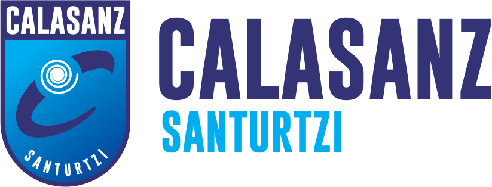
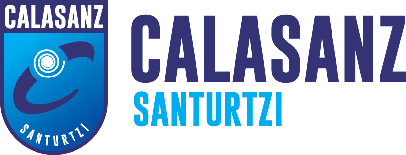

English
English
 Svenska
Svenska
This digital learing solution is designed to promote the knowledge of how you can easily find out the elderly's life story and how to support the persons Sence of Coherense (SOC) with meaningful activities in daily life.
It enables students and staff to:

This webbpage is a digital showcase that is a part of the Erasmus+ D-LIGHT Network that is a partnership between SOSU Nord (Denmark), Tallinn Health Care College (Estonia), Yrkesinstitutet Prakticum (Finland), ROC da Vinci College (the Netherlands), and Calasanz Santurtzi S.L. (Spain/Euskadi). Together, we identify innovative digital learning solutions to shared European challenges in preparing for tomorrow’s Care and Rehabilitation Services for Senior Citizens.
 
